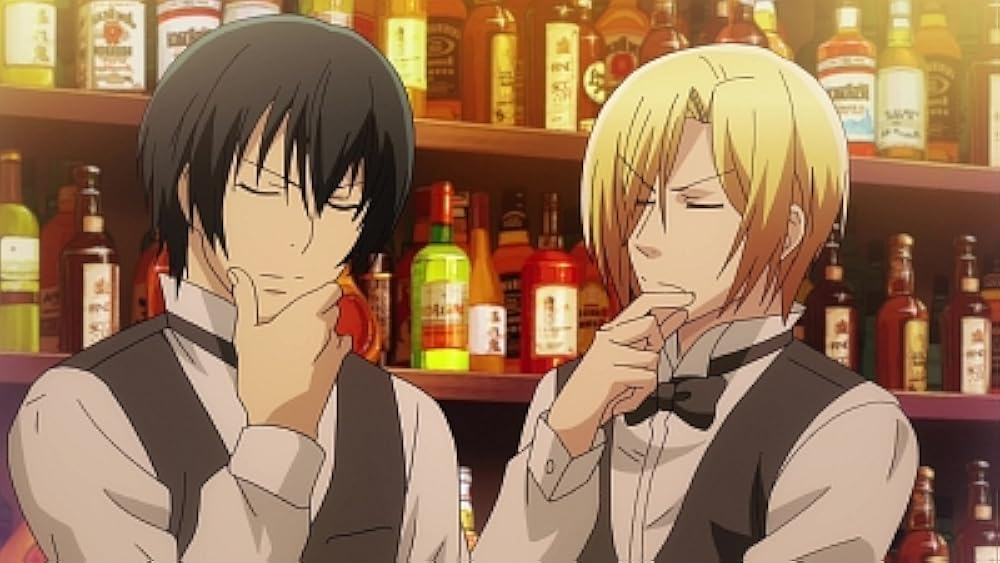

Hermano, tu sabes que eres una de las personas más importantes para mí, no querría perderte por nada y tú lo sabes, sé que tenemos nuestras diferencias y problemas, yo entiendo que ese día te hayas sentido ofendido/dolido eso lo entiendo y me quiero disculpar por ello, lamento haberte herido en tu cumple wn, se que es importante, y de verdad lo lamento, me encantaría que hicieramos las pases y me gustaría que me entendieras un poco también el porque actúe de esa manera, nunca lo hice con afán de ofenderte, tu sabes mayormente como soy yo, es solo que tu sabes que no me gusta que toquen mis cosas sin permiso, y creeme que ese día te la iba a pasar para que jugaras lo que quisieses luego de hacer mis diarias, pero te fuiste y ajá, solo quiero que empezemos a tener mejor comunicación, dime si no te agradó y hablemoslo, no tienes porque ponerte o yo ponerme con rabietas, tu solo pideme las cosas de buena manera, que tu bien sabes que me pides la vida y sin dudarlo la doy por ti, bien sabes eso, entonces no debemos estar separados, más bien juntos y de verdad lamento que las cosas saliesen así pero también daré de mi parte por moderar un poco mi vocabulario, ¿si? y bueno, feliz cum atrasaisimo ese dia te iba a felicitar en la tarde pero pasó el peo, entonces ya está espero que todo quede solucionado hermano, tu sabes que te amo y te adoro, te quiero mucho♥
